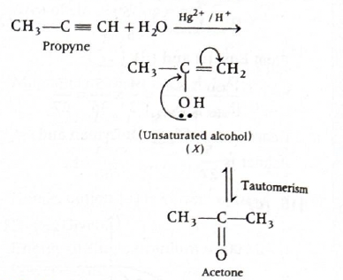
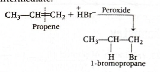
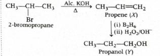
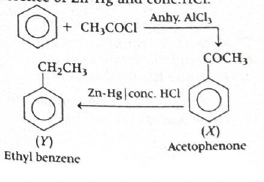
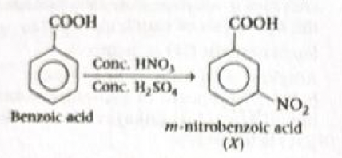
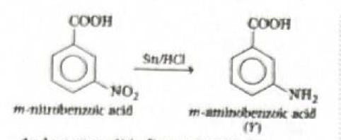
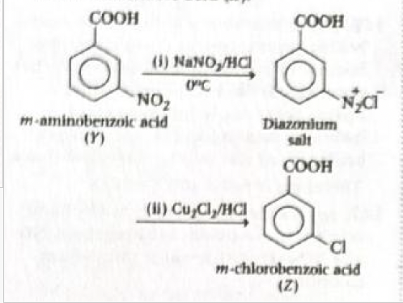
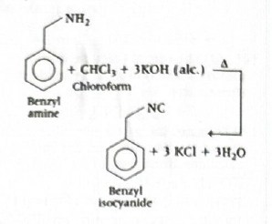

Answer: \((c)\) (A) is true but (R) is false.
Solution:
Nitrogen has electronic configuration \(\mathrm{1s^2\,2s^2\,2p^3}\).
Oxygen has electronic configuration \(\mathrm{1s^2\,2s^2\,2p^4}\).
In nitrogen, the three \(2p\) electrons occupy three different orbitals:
\(\mathrm{2p_x^1\,2p_y^1\,2p_z^1}\)
This is a half-filled \(p\)-subshell, which is extra stable.
In oxygen, one of the \(2p\) orbitals contains a pair of electrons, so there is some electron-electron repulsion inside that orbital.
Because of this repulsion, removing one electron from oxygen is slightly easier than removing one from nitrogen.
Therefore, first ionisation enthalpy of oxygen is less than that of nitrogen.
So Assertion (A) is true.
The reason says half-filled or completely filled orbitals are less stable.
This is incorrect.
In fact, half-filled and completely filled subshells are more stable.
That extra stability is due to better symmetry and lower repulsion effects.
So Reason (R) is false.
Assertion is true, but Reason is false.
Therefore, the correct answer is \(\boxed{(c)}\).
Why nitrogen is more stable than oxygen here:
\(\mathrm{2p^3}\) means one electron in each \(p\)-orbital.
\(\mathrm{2p^4}\) means one orbital gets a pair of electrons.
Simple orbital picture:
Nitrogen: 2p ↑ ↑ ↑
Oxygen: 2p ↑↓ ↑ ↑
JEE / NCERT takeaway:
\(\mathrm{IE_1(N) > IE_1(O)}\)
\(\mathrm{N = 2p^3}\) is half-filled and especially stable.
1-minute solving trick:
\(\mathrm{N > O}\) in first ionisation enthalpy.
half-filled = extra stable.
\(\boxed{(c)}\)
Chapter / Topic / Subtopic:
Final exam-style answer:
Nitrogen has configuration \(\mathrm{1s^2\,2s^2\,2p^3}\), which is a half-filled \(p\)-subshell and is extra stable. Oxygen has configuration \(\mathrm{1s^2\,2s^2\,2p^4}\), where one \(p\)-orbital contains a pair of electrons causing extra repulsion. Hence, an electron is removed more easily from oxygen than from nitrogen, so first ionisation enthalpy of oxygen is less than that of nitrogen. Therefore Assertion is true.
The Reason is false because half-filled and completely filled orbitals are more stable, not less stable.
\(\boxed{(c)\text{ Assertion is true but Reason is false}}\)
Quick cheatsheet:
Energy needed to remove the outermost electron from an isolated gaseous atom.
Across a period, ionisation enthalpy usually increases.
\(\mathrm{IE_1(N) > IE_1(O)}\)
\(\mathrm{N = 2p^3}\) is half-filled and more stable.
\(\mathrm{2p^4}\) has one paired electron, so repulsion increases.
Half-filled and fully filled subshells have extra stability.







